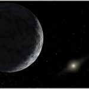
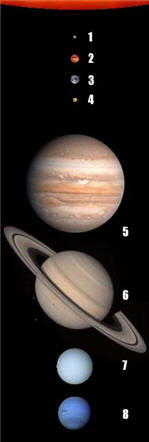
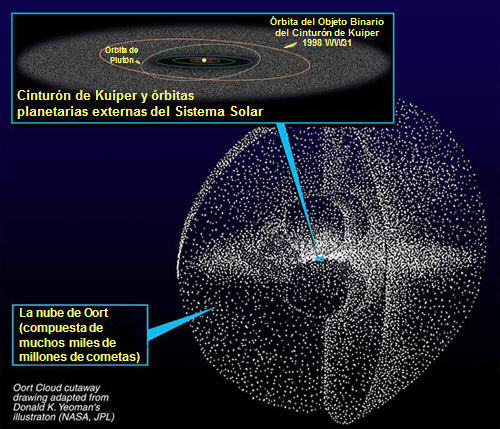

El planeta oculto del sistema solar
En el Sistema Solar existen a la fecha 8 planetas que son reconocidos como tales, uno de los cuales es el lugar en que vivimos. A la derecha pueden ver al planeta enano Eris, descubierto recientemente.
{kind=link}
Hasta este siglo se consideraba a Plutón el noveno planeta, pero a raíz de una revisión de la definición de planeta en el año 2006 por la UAI (Unión Astronómica Internacional), se convirtió en un planeta enano.
En cuanto a los planetas, abajo de estas líneas pueden ver a escala y en orden por su distancia del Sol a: Mercurio, Venus, la Tierra, Marte, Júpiter, Saturno, Urano y Neptuno.
La historia que hoy nos ocupa, consiste en que astrónomos creen en la posibilidad de encontrar cuerpos del tamaño de Plutón, o incluso tan grandes como Mercurio o Marte, en el “vecindario exterior” del sistema solar (eso de vecindario es de mi parte).
Para empezar debo explicar que después de la órbita de Neptuno, empieza una zona conocida como “Cinturón de Kuiper“, este cinturón empieza a partir de la órbita de Neptuno, a 30 UA del Sol y termina aproximadamente a una distancia de 55 UA.
(Una unidad astronómica o UA, es la distancia promedio de la Tierra al Sol.)
Regresando al Cinturón de Kuiper, en este lugar es donde orbitan numerosos objetos del tipo cometa, y otros similares a Plutón, aunque de menor tamaño, excepto por Eris (el culpable de que Plutón perdiera su estatus de planeta ^_^).
Por años, los astrónomos han buscado sin éxito en este Cinturón al soñado décimo (o noveno) planeta.
Sin embargo, puede ser que el planeta oculto del sistema solar se encuentre más allá de esta zona. Veamos.
Después, mucho después de terminar el Cinturón de Kuiper, se encuentra otra zona conocida como “Nube de Oort“, la cual está compuesta por cometas, y que se piensa ocupa el espacio desde una distancia de 3,500 UA del Sol hasta aproximadamente los 150,000 UA. La nube de Oort constituye el límite del Sistema Solar.
Ahora bien, en el año 2003 fue descubierto el objeto más remoto conocido del Sistema Solar: Sedna. Este cuerpo se ubica a 90 UA del Sol, es decir en el espacio supuestamente vacío entre el Cinturón de Kuiper y la Nube de Oort.
El descubrimiento de Sedna, hace pensar a los científicos que es posible que otros objetos de tamaño similar a Plutón o mayores, existan en ese mismo espacio. Hay que considerar que si Sedna fue descubierto, fue gracias a que en estos momentos se encuentra en la parte más cercana de su órbita al Sol, por lo que encontrar cuerpos similares no será sencillo.
Sin embargo, la misma órbita de Sedna hace pensar a los científicos que algún objeto de masa importante está afectándolo.
Abajo, un diagrama de la NASA (traducido por un servidor), mostrando al Cinturón de Kuiper y la Nube de Oort en perspectiva. ^_^

Nota: El objeto binario 1998 WW31 que se vé en el diagrama, es el primer objeto binario transneptuniano descubierto después del descubrimiento de Plutón en 1930. También es el sistema binario más simétrico conocido del Sistema Solar.
Lectura inicial en:
- MSNBC: Large ‘Planet X’ may lurk beyond Pluto
- Space.com: Solar System Surprise: A New View of What’s Out There
Fuentes para escribir esta anotación:
- Wikipedia en Español: Nube de Oort, Cinturón de Kuiper, y artículos relacionados.
- Wikipedia en Inglés: Oort Cloud, Kuiper Belt, y artículos relacionados.
Metadatos y acciones
 Temas: astronomía, ciencia, universo ⋅
Para guardar: Enlace permanente a esta anotación.
Temas: astronomía, ciencia, universo ⋅
Para guardar: Enlace permanente a esta anotación.
 Print This Post
Print This Post
Comentarios
Los comentarios están cerrados.
Categorías
Últimas 4 anotaciones
Últimas anotaciones en cada categoría

Divulgación
El dinero no fomenta la creatividad: Daniel Pink en TEDGlobal 2009

Inspiración
Los 30 no son los nuevos 20

Noticias
Ver tu mente en tiempo real: Christopher deCharms en TED 2008
![Música en la era digital [Animación]](../../../wp-content/themes/tma/images/featured/animation_04_2009_featured.jpg)
Ocio
Música en la era digital [Animación]
junio 20, 2008, 6:08 am
Wow. Interesante.
septiembre 8, 2008, 8:09 pm
Como dice Jeanny: Wow . interesante, aunque algunas cosas requiero de más explicación personalizada jajaja
besitos
octubre 7, 2008, 9:32 am
muy interesante
noviembre 10, 2008, 2:50 pm
wow¡ genial me encanta datos asi………
enero 13, 2009, 8:00 pm
Dios es uno que continua creando, por consiguiente el universo es infinito. No estamos solos aquí.
junio 12, 2009, 2:33 pm
hola esta muy bueno esta
pagina y mandame un mensage
…….